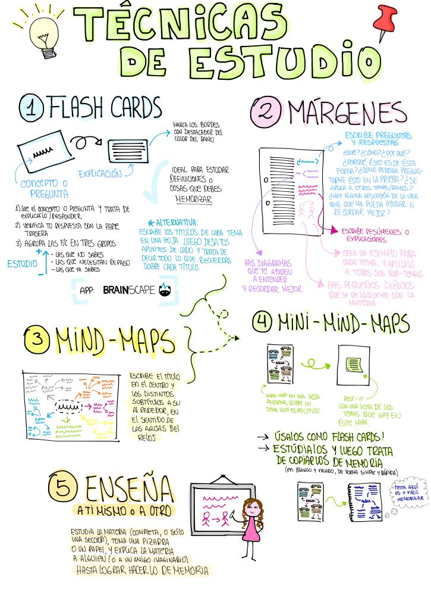
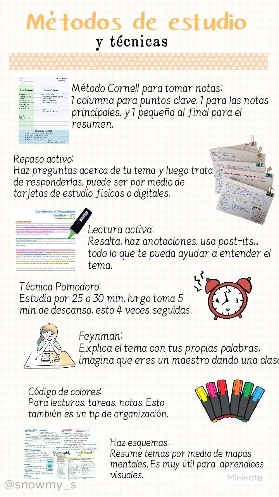

INGLES II
MIGUEL ANGEL VIEYRA GUZMAN
El profesor de ingles nos hizo hacer una infografia, sobre el metodo "Eisenhower Matrix" donde cada quien debia hacer un apartado para luego exponerlo durante 1 minuto, para organizar lo que haras dia con dia en tu vida cotidiana, en aquella ocasión tuvimos que exponer el tema del metodo en ingles, frente al salon, dando como un minimo 5 minutos por cada equipo, siendo 1 minuto por cada integrante del equipo, asi mismo nos pidio aprendernos en tema para poderlo exponer y nos ayudaba a corregir las pronunciaciones y los errores del orden al decir las palabras.

